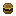

Create: Bread and Beyond
附属模组
面包、肉饼、芝士与下界三明治
这是什么
一条吃的产线：面团 → 面包胚，生肉 → 肉饼 → 芝士汉堡，还有下界/诡异两种菌岩三明治和一把刀。
命名空间：
create_bread_and_beyond 1.20.1 版本：本页物品与配方直接取自该版本的 jar。面包与面团3
Cinder Doughcreate_bread_and_beyond:cinder_dough
Nether Breadcreate_bread_and_beyond:nether_bread
没有工作台/机器配方
肉与芝士6

Cheese Burgercreate_bread_and_beyond:cheese_burger
Cooked Pattycreate_bread_and_beyond:cooked_patty
没有工作台/机器配方
Meatloafcreate_bread_and_beyond:meatloaf
没有工作台/机器配方
Mince Meatcreate_bread_and_beyond:mince_meat
Raw Pattycreate_bread_and_beyond:raw_patty
三明治与汉堡2
Crimson Nether Sandwichcreate_bread_and_beyond:crimson_nether_sandwich
Warped Nether Sandwichcreate_bread_and_beyond:warped_nether_sandwich
调料与工具2
Knifecreate_bread_and_beyond:knife
Saltcreate_bread_and_beyond:salt
没有工作台/机器配方